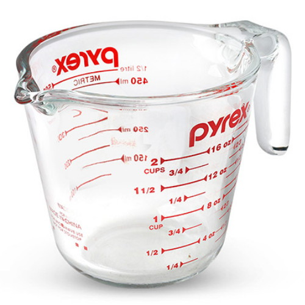

부엌에서 쓰는 칼. 식칼이라고도 한다. 나이프의 일종이라고도 볼 수 있다. 실제로 메서 같은 사례가 있기도 했고.
요리를 하기 위한 필수요소 중 하나. 먹을거리를 다지거나 알맞은 크기로 자르는 데 사용한다.
부엌에서 쓰는 칼. 식칼이라고도 한다. 나이프의 일종이라고도 볼 수 있다. 실제로 메서 같은 사례가 있기도 했고.
요리를 하기 위한 필수요소 중 하나. 먹을거리를 다지거나 알맞은 크기로 자르는 데 사용한다.
- 올바른 사용법
- 잘못된 사용법
부엌칼을 기본적으로 다룰 때는 부엌칼을 "수직으로 세워서" 사용한다. 칼 손잡이는 검지와 엄지로 칼자루와 손잡이가 만나는 부분인 칼날의 뿌리 근처를 감싸 쥐고, 나머지 손가락으로 손잡이를 단단하게 잡는 것이다. 칼 쥐는 법을 제대로 모르는 사람들의 경우 칼자루 부분만 움켜쥐는 경우가 있는데 그렇게 쥘 경우 세심한 칼질하기에 어려워진다. 칼 쓰는 일을 잠시라도 업으로 삼아 익숙할 경우에는 손이 아프면 제 편한 대로 잡아도 별문제 없긴 하다.
칼날을 수직으로 세워서 쓰지 않으면 미끄러지면서 다칠 확률이 높아진다. 흔히들 칼자루 전체를 감싸듯 잡거나, 검지 손가락을 쭉 펴서 칼등에 대고 남은 손가락으로 자연스레 칼자루를 잡는데 잘못된 방법이다. 후자의 방법은 날을 눕혀서 썰어야 하는 경우인 '회' 혹은 '포'를 뜨거나 발골하는 경우에 쓰는 방법이다. 일반적인 경우에 사용하는 방법이 아니라는 것이다.
식칼로 썰 먹을거리의 밑에 받쳐두는 주방 도구. 주방에는 나무 도마와 실리콘 도마가 일반적이고, 업소용으론 플라스틱 도마가 가장 많다. 당연하게도 칼로 치면서 흠이 패이는데, 여기에 온갖 식재료 조각이 들어가 부패하여 세균의 온상이 되기도 한다. 요즘은 항균 처리된 도마도 많이 나온다. 그래도 매일 매일 깨끗하게 씻고, 일광 소독이나 자외선 소독을 하면 더욱 청결하게 쓸 수 있다.
 실험이나 요리를 할 때 재료의 양을 재기 위해 사용하는 기구. 그 이름처럼 긴 손잡이 끝에 일정한 부피를 지니고 안에 액체나 가루 등을 담을 수 있는 부위가 붙어있는 숟가락의 모습을 하고 있다. 위의 이미지처럼 여러가지 크기의 계량스푼이 묶어진 형태나 양 쪽에 테이블 스푼과 티스푼이 붙어있는 형태로 나오는 경우가 많다. 실험, 요리 도구이므로 주로 실험실이나 부엌에서 많이 쓴다.
전세계적에서 가장 흔하게 쓰이는 요리 그릇의 한 종류이다. 세계 각국에서 전통적으로 국이나 수프를 만들거나 각종 식품을 끓이고 삶고 튀기는데 사용되어 왔다. 빗살무늬토기를 고려하면 "인류 최초의 조리도구"라고 할 수 있을 듯.
 구이, 볶음요리, 조림 등 수분이 적은 조리방식에 주로 사용되는 조리도구.
깊이가 깊은 팬의 경우 국물이 있는 요리를 할 때 사용하기도 한다.
식문화와 조리방식의 차이로 국가와 지역에 따라 다양한 형태와 재질의 프라이팬이 사용되고 있다.
국내에 프라이팬이 들어오기 전에는 무쇠솥의 뚜껑을 뒤집어서 사용하거나, '번철' 이라는 것을 사용했다.
구이, 볶음요리, 조림 등 수분이 적은 조리방식에 주로 사용되는 조리도구.
깊이가 깊은 팬의 경우 국물이 있는 요리를 할 때 사용하기도 한다.
식문화와 조리방식의 차이로 국가와 지역에 따라 다양한 형태와 재질의 프라이팬이 사용되고 있다.
국내에 프라이팬이 들어오기 전에는 무쇠솥의 뚜껑을 뒤집어서 사용하거나, '번철' 이라는 것을 사용했다.
- 코팅팬
- 동팬
철이나 알루미늄 팬의 안팎을 코팅하여 음식이 잘 눌어붙지 않고 설거지도 쉽다. 엄격히는 철제 팬이나 알루미늄팬의 하위 항목에 속하나, 편의상 별도의 문단으로 다룬다. 음식이 눌어붙더라도 코팅 덕분에 미지근한 물에 불려서 스펀지로 문지르면 잘 떨어진다. 식용유가 없어도 눌어붙지 않지만 기름이 없으면 열 전도가 잘되지않기 때문에 닿는 부분만 타게 된다. 적은 기름으로 조리할 수 있어 지방 과다섭취를 막을 수 있다.
말그대로 구리로 만든 프라이팬이다. 스텐팬과 비슷하게 전통적으로 그리스, 터키, 라틴아메리카권에서 많이 쓰던 프라이팬으로 스텐팬과는 달리 내부에 주석이나 스테인리스를 씌운다. 동을 그냥 가열하면 구리성분이 묻어나오기도 하거니와 녹슬면 몸에도 매우 해롭기 때문이다. 동팬의 장점은 미친듯한 열전도율로 적은 불로도 요리가 가능하다는 점에 있다. 특히 두꺼운 고기를 구울때 동팬은 빛을 발하며, 그외에 겉에 코팅된 주석으로 음식이 잘 달라붙지도 않는다. 스테인리스 팬과 마찬가지로 예열이 필요하긴 하지만 일반적으로 중간불 기준 10초정도면 충분하다. 빈 프라이팬 상태로 너무 오래 가열하면 주석이 녹아버린다. 그리고 동팬은 처음 사용할때 길들이기가 필요한데, 전통적으로 터키에서는 우유를 넣고 끓인 다음 물에 씻지 않고 대충 닦아놓았다가 겉의 우유가 마르면 세재없이 물로 씻어주는 식으로 했다.
요리할 때 음식을 뒤집는 요리 기구. 영어로는 Turner 라고 한다. 아래쪽은 넓적적한 면으로 되어있어 음식을 뒤집기에 알맞고, 위쪽으로는 길게 손잡이가 있는 형태이다. 넓적적한 면은 구멍이 있는 경우와 없는 경우가 있다. 구멍이 뚫린 경우는 음식물의 기름이나 물 등이 빠지도록 하려는 기능적 목적을 가지고 있으며 앞서 언급한 소재들의 특성 때문에 튼튼한 스테인레스에서 많이 보이는 형태이다. 실제 요리를 할 때에는 뒤집는 일 뿐만아니라, 요리 재료를 섞거나 작은 크기로 잘라내기, 으깨기 등 다양한 용도로 사용된다. 보통 칼을 쓰지 않아도 쉽게 자를 수 있는 식재료를 조리할때 도마와 칼을 쓰는 건 번거로우므로 팬 위에서 즉흥적으로 이렇게 사용하는 경우가 많다. 음식을 저어 섞는데 쓰이는 도구를 의미하는 주걱과는 다른 요리 기구이다. 단, 납작한 나무 주걱은 뒤집개로 쓰이는 경우가 있다.
음식을 저어 섞거나, 긁어서 퍼내거나, 펴바르는 용도로 사용하는 도구이다. 서구권에는 완벽하게 일치하는 물건은 없지만 비슷한 물건으로는 Spatula, Serving Spoon, Scraper, Spreader 등이 있다.
- 역사
- 재질
역사를 볼때 경주 금관총에서 4-5세기 솥이 출토되므로 이때쯤 생겼을 확률이 높다. 처음에는 나무로 만들어졌으나, 고려시대에 이르러 놋쇠로 바뀌었다. 일부 해안지방의 경우는 가리비 등 대형 패각을 밥주걱으로 사용하기도 하였다. 조선시대에 들어서는 밥을 푸는 일 외에 고추장을 담글때 쓰이는 등 사용범위가 다양해졌다. 밥을 푸는 주걱은 놋쇠, 대나무로 사용하였고 고추장을 담글 때는 나무로 된 대형 주걱을 사용했던 것으로 추정된다. 한국의 관습으로는 복이 집 밖으로 달아나지 못하게 솥 안의 밥을 주걱으로 풀 때 들이푼다고 한다. 요즘엔 밥을 푸는 주걱들은 거의 다 플라스틱 소재 아니면 실리콘으로 제작된다. 내열한도는 120°정도인 경우가 보통으로, 프라이팬이나 냄비 조리시에 나오는 높은 열엔 약하다.
1> 스테인리스 스틸: 금속 주걱은 소재 덕에 미칠듯이 튼튼한 내구도를 자랑한다. 하지만 가정에서 쓰는 코팅팬은 연약해서 금속 주걱을
마구 쓰면 코팅이 벗겨지고 긁힌다. 그래서 튼튼한 무쇠팬, 웍, 철판에서 하는 조리에 더 알맞다. 가정보다는 업계에서, 밥 푸는
용도보다는 다른 고열의 조리를 하는데서 더 많이 보이는 소재의 주걱이다.
2> 무쇠: 전통 중화요리용 제품으로 출시된다.
3>나무, 대나무: 나무 주걱은 옻칠을 했나 안 했나로 나뉜다. 둘 다 내열성은 멜라민보단 더 나아서 열에 쉽게 손상을 입지는 않는다.
옻칠하지 않은 나무주걱의 경우 쓸 때 나뭇결에서 거스러미가 일거나,[2] 쓰다가 습기 때문에 곰팡이가 슬기도 한다. 옻칠한 나무주걱의
경우 거스러미가 일 우려가 거의 없고 열기와 습기 모두 강한 편이다. 나무라는 재질상 금속보다는 뭉툭하고 무르기 때문에 밥솥의 열기를 견디는건 물론,
코팅팬의 열기도 더 안전하게 견디면서도 표면에 손상을 별로 입히지 않는다. 안 타는건 절대로 아니니까 사용시 열기를 조심할 필요가 있다.
4>플라스틱: 환경호르몬이 나오지 않는 BPA 프리 플라스틱이 주로 쓰인다. 하지만 이 주걱을 쓰는 가게에 가는 것이 꺼려진다고 말하는
사람이 많을 정도로 플라스틱 주걱에 대한 인식은 매우 나쁘다.
5>나일론 섬유: 몇천원 정도 하는 싸구려에 주로 쓰인다.
6>멜라민, 고무, 실리콘: 잘 휘어져서 그릇이나 냄비같은 곳에 붙어있는 밀가루 반죽이나 녹은 초콜릿을 긁어내는데 주로 쓰인다.
뜨거운 요리에는 부적합하다. 부주의하게 다룰 경우 프라이팬의 열기에 자기가 녹거나 눌어붙는 등 손상을 입는다. 열 때문에 해당 소재로 만든 주걱들에서
유해성분이 우러나오는게 아닌가 찝찝한을 느끼는 사람들도 있다.
국 등 액체로 된 음식물을 뜰 때 사용하는 도구. 샥구라고도 한다. 국물을 담는 움푹하게 파여진 부분에 긴 손잡이를 달아 놓은 것이 특징이다. 석기 시대부터 국자를 사용해 왔으며 조가비나 토기, 청동, 놋쇠 등에 자루를 연결해 만들었다. 삼국시대에는 황남대총 남분 은제 국자처럼 귀금속으로 만들기도 했고 황남대총 야광조개국자, 천마총 야광조개국자처럼 수입 조개에 금을 씌운 사치 공예품 국자도 있다. 현대에는 알루미늄, 스테인레스 스틸, 플라스틱 등으로 만든 국자가 주로 사용된다. 군대나 학교에서 배식용으로 쓰는 국자는 쇠로 이루어져 있는 걸 사용하는 경우가 많아 조금 무거운 편. 급식을 배식할 때 국이 빠지는 일은 거의 없으므로 자주 사용하게 되는데, 학교 급식에서 급식당번을 해 봤다면 실수하여 국통 속으로 국자를 빠뜨려 꺼내지도 못하고 대략 난감한 상황을 한 번 이상은 겪어봤을 것이다. 이에 따라 물에 뜨거나 손잡이 끝자락을 냄비에 걸칠 수 있게 만든 국자가 개발되기도 한다. 달고나를 만들 때 사용하기도 한다. 다만 달고나를 직접 만들어 먹어 보려면 금속으로 된 국자를 사용해야 한다. 플라스틱 국자를 쓰면 국자도 태워먹고 가스레인지도 지저분해진다. 여담으로, 대구경북에서는 달고나를 국자라고 부른다.